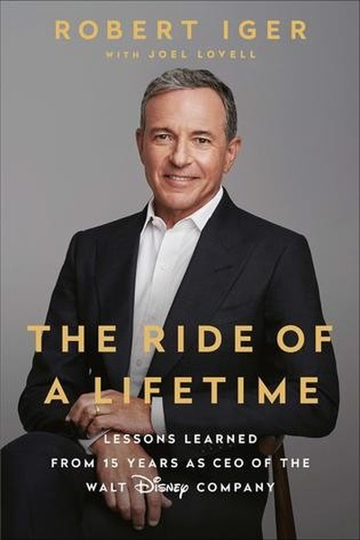

Library › Business & Startups
The Ride of a Lifetime — Summary & Key Lessons

Lessons from 15 years as Disney's CEO — courage, focus and the art of reinvention.
📖 OPEN THE FULL INTERACTIVE BREAKDOWN →🌐 Read it in Hindi, Hinglish, Gujarati, Tamil & 22 more languages — free, with audio.
💡 The Big Idea
Bob Iger turned Disney into the world's most powerful entertainment company by making bold bets — Pixar, Marvel, Lucasfilm, and streaming — while the industry expected caution. His playbook: lead with optimism and courage, focus ruthlessly on the future, innovate or die, respect people even while making hard calls, and never let perfectionism delay a good decision.
🧠 The 6 Key Lessons
Lesson 1: Optimism Is a Leadership Duty
Chapter 1: The Beginning
Iger argues that pessimism is a luxury leaders cannot afford — people look to you to calibrate their courage. Optimism is not naivety; it is the decision to focus on what can be done and to communicate possibility. A leader's mood is contagious, so choose it deliberately.
📖 Example: When Iger became CEO, Disney's animation was struggling and the board was skeptical of acquisitions. His relentless 'this can work' framing carried Pixar, Marvel and Lucasfilm deals through, because his team believed the future was winnable before the… Read the full example →
⚡ Do this: In your next team update, lead with one genuine opportunity and the first step toward it — before listing problems.
Lesson 2: Focus Means Saying No to Good Things
Chapter 2: The Strategy
Iger's famous focus strategy: quality over quantity, technology as friend not enemy, and global expansion — which meant killing or shrinking beloved-but-dying businesses. Real focus is not deciding what to do; it is deciding what to stop doing, even when it hurts. Every 'yes' to the past is a 'no' to the future.
📖 Example: Iger cut Disney's underperforming divisions and poured resources into a few big bets. The painful part was not the strategy but the discipline: dozens of decent projects were refused so that Pixar, Marvel and streaming could get everything they needed. Read the full example →
⚡ Do this: List your top five activities. Cut one that is 'fine but not future' this quarter, and move its time to your #1 bet.
Lesson 3: Innovate or Die — Comfort Is the Real Threat
Chapter 3: The Transformation
Iger's mantra: if you don't disrupt yourself, someone else will. Disney embraced streaming even though it cannibalized its own cable profits, because the alternative was extinction. The most dangerous moment for any business is the one where it feels safe — that's when the future is quietly being built elsewhere.
📖 Example: Disney+ launched despite the company's own analysts warning it would eat Disney's lucrative cable revenue. Within years, the 'cannibalization' looked like genius — while rivals who protected legacy revenue were caught flat-footed. Read the full example →
⚡ Do this: Identify one part of your work that a competitor could disrupt. Start the disruptive version yourself — even at the cost of your current income stream.
Lesson 4: Respect People, Even When Decisions Hurt
Chapter 4: The People
Iger made brutal calls — restructuring units, moving on from executives, saying no to beloved projects — but never forgot that decisions are about situations, not people. You can be decisive and humane at once: separate the person from the problem, and communicate directly and kindly.
📖 Example: When Iger had to pass on a project a respected executive loved, he explained the reasoning fully and honored the relationship — the executive remained a loyal ally. Tough decisions delivered with respect build trust; the same decisions delivered coldly build… Read the full example →
⚡ Do this: Before your next hard 'no', write how you will deliver it with respect: direct, kind, and with the reasoning visible.
Lesson 5: Perfectionism Is the Enemy of Progress
Chapter 5: The Decisions
Iger admits he makes decisions with imperfect information, fast — because waiting for certainty means waiting forever, and the cost of delay often exceeds the cost of error. His rule: accept that mistakes will happen, make them quickly, and fix them quickly. Perfectionism masquerades as quality but is usually fear.
📖 Example: The decision to acquire Pixar in 2006 came together quickly and against odds — waiting for perfect terms would have killed the deal. Iger notes that some of his best calls were made on 70% information, while his worst ones were delayed until they were obvious. Read the full example →
⚡ Do this: Pick one decision you've been deferring for certainty. Give yourself a deadline this week and decide on the best available 70%.
Lesson 6: The Future Is Built by the Curious
Chapter 6: The Legacy
Iger's final lesson is intellectual humility plus relentless curiosity: the world changes fast, and leaders who stop learning stop leading. He describes his job as 'looking around corners' — reading, traveling, meeting outsiders, asking questions that embarrass the comfortable. Curiosity is the only sustainable competitive advantage.
📖 Example: Iger's decision to bet on streaming came partly from watching how his own children consumed media — he stayed close to new behavior instead of defending old habits. The executives who dismissed 'kids these days' missed the biggest shift in entertainment… Read the full example →
⚡ Do this: Schedule one 'look around the corner' hour weekly: read outside your industry, talk to a younger colleague, test one new tool.
✅ 5-Step Action Plan
- Lead your next update with an opportunity, not just problems
- Cut one 'fine but not future' activity this quarter
- Start the disruptive version of your own product or role
- Deliver your next hard 'no' with visible respect and reasoning
- Decide your deferred 70%-information decision this week
⚠️ When This Doesn't Work
⚠️ When this doesn't work: Iger's bold-bet playbook worked with Disney's cash reserves and brand power — for startups, 'innovate or die' can mean burning the bridge before you've built the next one, and optimism can tip into denial. Copy the discipline (focus, curiosity, respect), not the reckless scale of bets.
💀 The Graveyard Proves It
💽 AOL–Time Warner — The Worst Merger in History. Burn: $99B write-down (one year). Read the full case study →
💬 Best Quotes from The Ride of a Lifetime
- “Don't let ambition get ahead of opportunity.”
- “Innovate or die — there is no choice in the matter.”
- “The riskiest thing you can do is play it too safe.”
Interactive version: mark lessons as read, listen in your language, share quote cards.